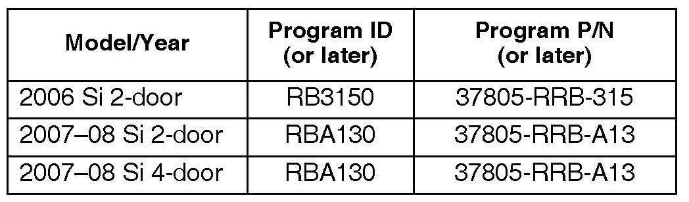

Engine Controls - MIL ON/DTC P1116 Is Set
08-035July 20, 2011
Applies To:
2006-07 Civic Si - ALL
2008 Civic Si
- From VIN 2HGFA555.8H700001 thru 2HGFA555.8H707228
- From VIN 2HGFG215.8H700001 thru 2HGFG215.8H706232
MIL Comes On With DTC P1116
(Supersedes 08-035, dated May 23, 2008, to revise the information marked by asterisks)
*REVISION SUMMARY
*Under WARRANTY CLAIM INFORMATION, the flat rate time was changed because the MVCI updates control modules more efficiently.*
SYMPTOM
The MIL is on and DTC P1116 (ECT sensor 1 circuit range/performance problem) is stored.
PROBABLE CAUSE
The ECM misinterprets engine coolant temperature sensor inputs.
CORRECTIVE ACTION
Update the PGM-FI software.
WARRANTY CLAIM INFORMATION
The normal warranty applies.
Operation Number: 125517
*Flat Rate Time: 0.2 hour*
Failed Part: P/N 37820-RRB-A05
Defect Code: 03214
Symptom Code: 03205
Skill Level: Repair Technician
SOFTWARE INFORMATION
HDS Software Version: 2.013.017 or later.
Control Module (CM) Update:
Database Version 25-MAR-2008 or later
NOTE:
An incorrect HDS software version may indicate that the vehicle does not need an update.

The updated PGM-FI software program ID and P/N are shown below. If this, or later program ID is the Current Program ID displayed during the update, the software for this service bulletin is already installed.
REPAIR PROCEDURE
Update the PGM-FI software with the HDS. Refer to Service Bulletin 01-023, Updating Control Units/Modules.

Disclaimer